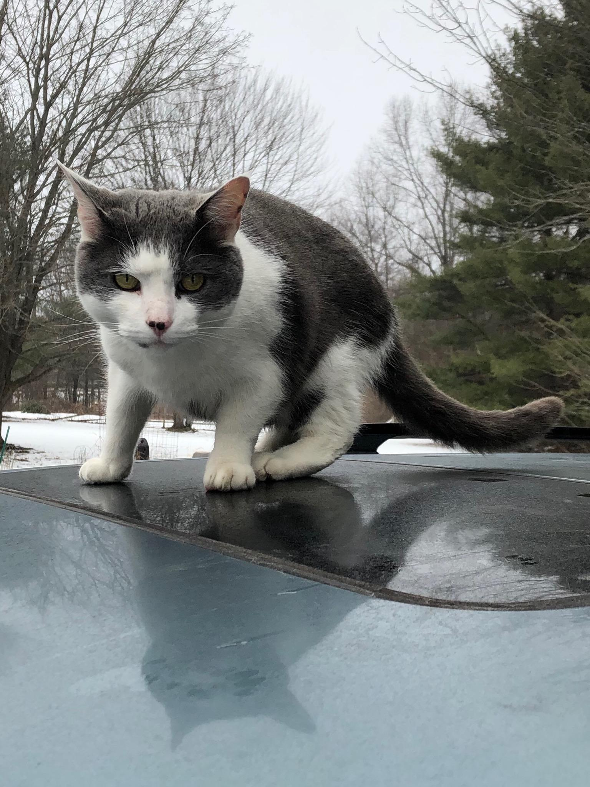

Hello!
My name is Tyler, and I reside in a small town outside of Boston, MA. The charms of this town are numerable. To give it a shot:
- It's quite pretty
My name is Tyler, and I reside in a small town outside of Boston, MA. The charms of this town are numerable. To give it a shot:
Web development is something I've found my way to recently, but I appreciate the challenges it poses, and the creative freedom it allows.
Outside of web development, my interests vary between:
I'm a hopeless romantic, with the emphasis on "hopeless," and I aim to make enough money that my cat can live comfortably.
Feel free to contact me elsewhere:
Until I have a professional headshot, and a more professional site, here is a picture of my cat, who is far more photogenic than I am anyway.
His name is Tetra.
